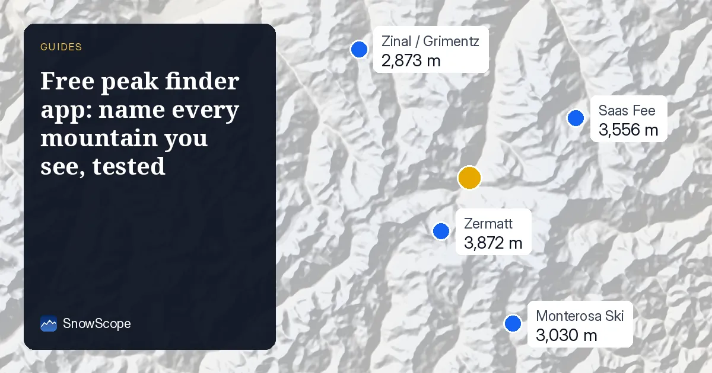

Free peak finder app: name every mountain you see, tested
You are on a terrace in Zermatt, a ridge in the Pyrenees or a ski lift in Colorado, and someone asks: which peak is that? The peak finder in the SnowScope app answers it. Point your phone at the mountains and it draws the skyline and writes the names of the summits on the screen, with their height, how far away they are and roughly how long it takes to walk up. It is free to download, it works offline once you have the region on your phone, and naming every peak costs a single payment of $0.99 (0,99 € in Europe), with no subscription. We also tested how often it is right, and this article shows the numbers, including where it still fails.
See the live snow forecast for Zermatt in the SnowScope appSnow depth, powder alerts and the 3D map, free.

What the peak finder does
Open SnowScope, tap the camera and choose Peaks. The app reads where you stand and which way the phone looks, then draws the line of the mountains on top of the camera picture. Each summit in sight gets a label: its name, its height and its distance. Tap one to lock on it and you see the direction in degrees, the time on foot from where you stand and the difficulty of the usual route. Swipe to move from one summit to the next.
A few things set it apart from a simple list of nearby peaks. Summits that are hidden behind a nearer ridge are not shown as if you could see them; when you open a summit from the map that is out of sight, the card says so. The route card shows the climb up and down, whether you would be back before sunset and how much snow lies on the way, because SnowScope is a snow app first. You can take a photo or a short clip with the names on it and share it.
How it works, in plain words
The peak finder does not guess from a photo database. It rebuilds the landscape around you from a height map of the ground: points every 30 m within 8 km of you, every 90 m out to 40 km, and a lighter map beyond that, up to 120 km away. From your position it sends a line of sight in every direction and keeps the highest point each one meets. That gives the skyline you should see, and a summit is named only if it stands above everything in front of it. The first time you use it in a place, it downloads 1 to 3 MB of terrain; after that it works with no signal.
The hard part is direction. A phone compass is easily thrown off by a car, a metal railing or a ski lift, and a few degrees are enough to put the wrong name on a peak: 5° at 10 km is 875 m sideways, often a different summit. So the peak finder does not rely on the compass alone. It looks for the line where the sky meets the mountains in the camera picture and turns the drawn skyline until the two match. Once it has locked, the phone's gyroscope keeps the labels steady while you pan, and the compass can no longer pull them away.

How accurate is it? What we measured
We ran three tests, and we give them with their size, because a number without its test is worth little.
Test 1, which summits are really in sight. At 14 places in the Alps, the Pyrenees and the Rocky Mountains, from village squares such as Zermatt and Grindelwald to viewpoints like the Aiguille du Midi and the Pic du Midi, we compared the summits the app lists with a slow, full-detail calculation that uses 30 m terrain all the way to 120 km. Of the 5,449 summits truly in line of sight, the app listed 5,330 (97.8 %), and 98.1 % of the summits it listed were really in sight. At the 12 places that are not big viewpoints the gap is smaller still: 975 of 983 found, 8 extra. All 97 checks on famous summits were right, for example the Matterhorn from Zermatt at 8.6 km, Mont Blanc from Chamonix at 10.1 km and from Grenoble at 113 km.
Test 2, real photos. We took 12 photos with a phone in the Ourika valley and around Oukaïmeden in Morocco's High Atlas, and stored what the phone's sensors said with each one. 6 photos had a clear skyline. The compass was off by between 1.5° and 105.4° (the two worst next to the metal of a ski station); the median was 5°. After the skyline match all 6 locked, with a median error of 0.15° and a largest error of 0.95°. At 10 km, 0.15° is 26 m. The other 6 photos showed trees, a windscreen or no sky at all, and the app correctly refused to lock on any of them. We also matched each photo against the skylines of other places nearby: 0 locks in 36 tries, so it does not lock onto the wrong mountain.
Test 3, simulated views. To test many more situations than we could photograph, we drew 168 camera views from terrain at 6 places, with clouds, haze, snow against a pale sky, low sun and objects in front, and compass errors up to 100°. While panning, 107 of the 168 locked within about a second (64 %), with a median error of 0.18°, and none locked in the wrong place. The rest stayed on the compass, which the app then tells you to calibrate.


What our tests do not show
These are our own tests, not an independent review. The real photos are few, 6 with a clear skyline, and all come from one phone in one mountain range; the 14 places in Test 1 compare two calculations made from the same height maps and the same list of summits, so an error in the map data itself would not show. Names and heights come from OpenStreetMap, which is very good in the Alps and thinner in some ranges.
The peak finder needs to see the skyline. In fog, in thick snowfall, under a low grey sky with snow on the ground, or in a forest, it cannot lock and falls back on the compass; in our simulated views it never locked when snow-covered slopes met an overcast sky of the same grey. In that case, calibrate the compass by waving the phone in a figure 8, as the app asks, and trust the big summits more than the small bumps.
What is free and what Pro costs
The app is free to download, with ads. In the peak finder, free users see the whole skyline, the distance, height and climb time of every summit in sight, and the names of the 3 most important summits in view, the highest first. Any summit you open from the map keeps its name too. The other peaks show as Peak plus their height, with a small lock.
SnowScope Pro names every peak. It is a one-time purchase, no subscription: on Google Play it costs $0.99 in the United States, 0,99 € in the euro countries, £0.99 in the UK, CHF 0.90 in Switzerland, 14 kr in Sweden and 13 kr in Norway, as listed on 13 November 2026. The same payment also removes the ads and unlocks the 3D videos of your resort. Some users are also offered a short video ad that names every peak for 24 hours, free.
How it compares with PeakFinder, PeakVisor and PeakLens
PeakFinder, PeakVisor and PeakLens are well-known apps that do this job well, each in its own way, and the table sums up what their own store pages and websites said on 13 November 2026. PeakFinder is a paid app ($5.99 on Google Play in the US), with one payment and no ads; it knows more than 1,000,000 peaks worldwide, draws landscapes up to 300 km away and works fully offline. PeakVisor is a free download with a paid PRO upgrade sold by subscription, adds 3D maps, trails and GPS tracking, and says it covers more than a million mountains.
Where SnowScope differs: it costs $0.99 once for every name, and you can use it for free with 3 names; it adds the climb time, the route and the snow on the way; and the same app gives you the snow forecast, snow depth and avalanche danger levels for the mountain you are looking at. Where it does less: it covers 7 mountain regions, not the whole world, and its list of 164,051 named summits is smaller than the worldwide lists of the others.
Tips for the best results
Stand where you can see open sky above the ridges, and hold the phone upright at eye level. Pan slowly across the view for a second or two: the match is strongest when it sees a long, jagged skyline. Step away from cars, metal railings and lift pylons before you start. If the app says the compass needs calibrating, wave the phone in a figure 8. Before a trip without signal, download your region once on Wi-Fi from the peak finder offline screen.
Where it works
The peak finder works in the 7 mountain regions SnowScope covers: the Alps (79,564 named summits), the Pyrenees (13,506), Scandinavia (21,133), the western United States (34,720), the north-eastern United States (6,786), Western Canada (7,672) and Morocco's Atlas (670). A whole region for offline use takes between 25 MB (the Pyrenees) and 401 MB (the western United States); you can also just use the camera online and it keeps what it downloads.
What is the best free peak finder app?
It depends on where you hike or ski. If you are in the Alps, the Pyrenees, Scandinavia, the western or north-eastern US, Western Canada or the Atlas, SnowScope is free to use with the 3 main names in view and costs $0.99 once for all of them. For other ranges, a worldwide app such as PeakFinder or PeakVisor covers more ground.
Is there an app that names mountains from the camera?
Yes. SnowScope, PeakFinder, PeakVisor and PeakLens all put mountain names on the camera picture. SnowScope also lines the drawn skyline up with the real one in the picture, so the names stay on the right peaks when the compass is wrong.
Is SnowScope a free PeakFinder alternative?
For the regions it covers, yes: the download is free, the skyline and 3 names are free, and every name costs $0.99 once, without a subscription. PeakFinder is a paid app that covers the whole world.
Does the peak finder work offline?
Yes. Download your region once from the peak finder offline screen, or use the camera online first: what it downloads stays on your phone. GPS works without a mobile signal.
Why are the names sometimes in the wrong place?
Usually the compass is disturbed or the skyline is hidden by cloud or trees, so the app cannot match it. Point at a clear ridge, pan slowly and calibrate the compass. Summits marked as partly hidden only just peek over a nearer ridge.
Is it available on iPhone?
Today the peak finder is in the SnowScope app on Google Play for Android phones.
Tips for skiers
- Pan slowly over a clear, jagged skyline for a second or two: that is when the names lock on.
- Keep away from cars, railings and lift pylons, and calibrate the compass with a figure 8 if the app asks.
- Download your region on Wi-Fi before a trip without signal.
- In fog or a flat grey sky, trust the big summits more than the small bumps.
More maps (external sites)
References and credits
- Google Play: SnowScope: Snow & Powder (prices of SnowScope Pro read on 13 November 2026) play.google.com/store/apps/details?id=snowruler.app&utm_source=snowscope_blog&utm_medium=blog&utm_campaign=peakfinder
- PeakFinder on Google Play (price, features, read on 13 November 2026) play.google.com/store/apps/details?id=org.peakfinder.area.alps
- PeakFinder: the mobile app (official site) www.peakfinder.com/mobile/
- PeakVisor on Google Play (read on 13 November 2026) play.google.com/store/apps/details?id=tips.routes.peakvisor
- PeakVisor (official site) peakvisor.com/
- PeakLens on Google Play (read on 13 November 2026) play.google.com/store/apps/details?id=com.peaklens.ar
- PeakLens (official site) www.peaklens.com/
- Copernicus DEM GLO-30 and GLO-90 (European Space Agency) spacedata.copernicus.eu/collections/copernicus-digital-elevation-model
- OpenStreetMap contributors (summit names and heights, ODbL) www.openstreetmap.org/copyright
About these numbers
Test 1: 14 places, the app's terrain (30 m within 8 km, 90 m to 40 km, coarser to 120 km) and summit list against a full 30 m calculation to 120 km (Copernicus DEM GLO-30) with the same summits (OpenStreetMap); a summit counts as in sight when it stands above the terrain in front of it. Test 2: 12 photos of one Android phone (23 October 2026), with the true direction of each found offline by an all-round search and checked by eye; 6 had a clear skyline. Test 3: 168 synthetic camera views from 6 places, 7 scenes, 4 directions, compass errors up to 100°, 6 frames each while panning; a lock is right within 1° of direction and 0.5° of tilt, wrong beyond 2° or 1°. Prices: Google Play, 13 November 2026. Competitors: their store pages and websites on the same day.
Cite this report
For research, teaching or the press: the numbers and charts are free to reuse under CC BY 4.0 with this citation.
SnowScope (2026), Free peak finder app: name every mountain you see, tested, https://snowscope.app/blog/en/2026/11/free-peak-finder-app-name-mountains-snowscope.html, accessed 2026-11-13
SnowScope (Atlas Labs). (2026, November 13). Free peak finder app: name every mountain you see, tested. SnowScope snow reports. https://snowscope.app/blog/en/2026/11/free-peak-finder-app-name-mountains-snowscope.html
BibTeX
@misc{snowscope2026freepeakfinderappnamemou,
author = {{SnowScope (Atlas Labs)}},
title = {Free peak finder app: name every mountain you see, tested},
year = {2026},
month = nov,
howpublished = {\url{https://snowscope.app/blog/en/2026/11/free-peak-finder-app-name-mountains-snowscope.html}},
note = {Published 2026-11-14 13:29 UTC; accessed 2026-11-13}
}· CC BY 4.0 · Methods, data and tools →
Follow Zermatt
Free: a message when fresh snow is coming, and the forecast every morning.
More snow reports

Whistler Blackcomb gained 24 cm in one week to 50 cm total; 62 cm more forecast in 72 hours as major storms hit mountains (8 November data).

La Grave's snowpack grew 17 cm in a week to 43 cm on 14 November, now forecast to gain 61 cm over the next 72 hours as a system moves across the Alps.

Whistler Blackcomb leads with 103 cm forecast in 72 hours. Orcières Merlette tops Europe with 36 cm. Data from 6 November.